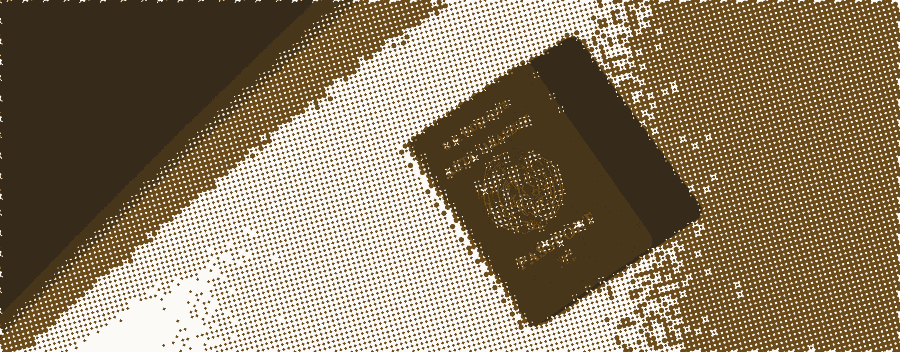
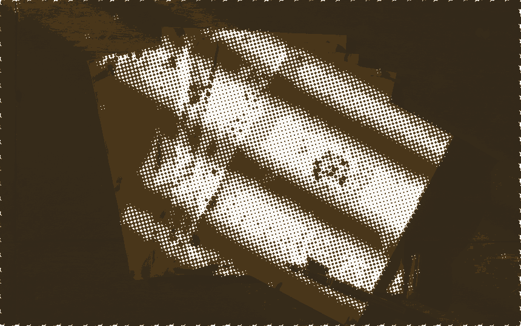
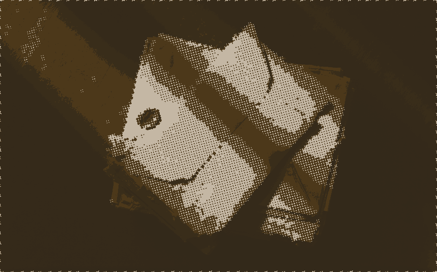
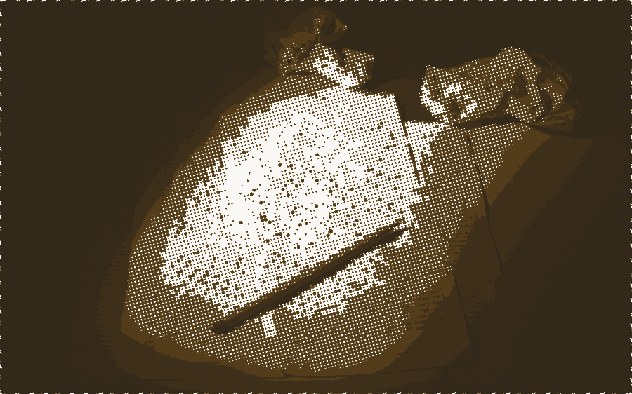

北京 · 杭州中英双语9:00 – 21:00
引力坊 GRAVITY FANG
面向 G5、常春藤与顶尖硕博申请的精英咨询。
顾问做判断，自研系统托住执行——方法、系统与结果，全部可核对。
Elite admissions consulting for G5, Ivy and top graduate programs.
Human judgment first; in-house systems carry execution — all of it checkable.

主张Proposition
顶尖申请里真正稀缺的不是信息，是判断。
该冲哪一档、哪条线值得重推、哪段经历该写进文书——这些问题没有标准答案， 只有在具体背景下站得住的取舍。信息可以查，判断得有人负责。
所以我们把工作分成两半：人做判断，系统托住执行。判断由顾问签字， 执行由自研的 Terra 总台承接——进度、材料、决策节点集中一处， 顾问、学生与家长看到同一套结构。
The scarce thing in selective admissions is not information but judgment. We split the work: people decide, systems carry the load.

方法Method
一条路径，拆到可执行。五步之间不是先后排队，而是互相约束： 定位画出的边界决定档案怎么配，档案的实际形状又会反过来修正定位。
判断Judgment
选校不是把梦校排成一列。它是在学术强度、专业匹配、录取现实与家庭承受力之间 做一次说得出理由的取舍。名单要有梯度——冲刺、匹配、稳健的比例按真实概率分布来定， 拿不准的单独留一档待复核。
A shortlist is a decision, not a wish list. Reach, match and safety are proportioned to real odds, with a hold column for anything unresolved.
表 1进入名单前必须回答的五个问题
| 维度 | 要回答的问题 |
|---|---|
| 学术强度 | 课程体系、GPA 走势、标化与竞赛的组合，对得上目标校的实际录取分布吗。Academic fit against real admit distributions. |
| 专业匹配 | 申请的专业与已有经历之间，有没有一条讲得清的线。A line the reader can follow. |
| 院校读法 | 拆到系所去读招生偏好，而不是拿一张综合排名表往上套。Read departments, not league tables. |
| 剩余时间 | 距截止还剩多少可用周数，决定了哪些短板值得补。Runway decides what is worth fixing. |
| 家庭边界 | 预算、地域、专业接受度——越早摊开，后面越少推翻重来。Constraints surfaced early cost less later. |
系统Systems
咨询是主业，系统是证据。申请季里最重的执行——进度、材料、通信、选校、测评—— 我们做成了自己的软件。产品持续迭代，官网只作说明与预约演示，不深链未稳定的生产环境。
Consulting is the product; the software is the proof. Still shipping — demos on request.
表 2能力与状态
| 模块 | 作用 | 状态 |
|---|---|---|
| Terra 总台 | 多角色门户、时间线、打卡与探索；写操作带调用链路记录，回头能查是哪一步起了作用。One source of truth, with traceable writes. | 迭代中 |
| Life-Echo | 基于人生故事访谈与大五人格，输出可用的心理画像，为定位与文书提供证据。Structured assessment that grounds positioning. | 公开体验 |
| 选校沙盘 | 多维条件收敛成清单，每所学校一张决策卡，策略可导出快照。Multi-factor lists with exportable snapshots. | 顾问端 |
| 申请邮箱 | 申请季往来邮件集中托管，关键节点不淹没在收件箱里。Correspondence that stays traceable. | 迭代中 |
| AI 辅助 | 推荐摘要与问答。只做提示，判断仍在顾问手里。AI suggests; people decide. | 内置 |
记录Record
二十一例。背景不同，方法一致。按层次、地区、方向筛选，自己核对。
Twenty-one admissions. Filter by level, region and field.

显示 21 / 21 例
| 学校 | 专业 | 层次 | 地区 | 背景要点 |
|---|---|---|---|---|
| Imperial College London | Mechanical Engineering | UG | 英国 | 4A*，STEP II；面试表现突出 |
| University of Oxford | MPhil Economics | PG | 英国 | 一等荣誉，IELTS 8.0；研究轨迹连贯 |
| University of Cambridge | Chemistry | UG | 英国 | 3A*1A，IELTS 7.5 |
| London School of Economics | MSc Management | PG | 英国 | 2:1 学位，对口实习 |
| Stanford University | Symbolic Systems | UG | 美国 | SAT 1570，已发表研究 |
| Columbia University | M.S. Data Science | PG | 美国 | GRE 330，GPA 3.9 |
| Cornell University | Biological Engineering | UG | 美国 | TOEFL 111，ACT 35，9 门 AP |
| UCLA | Computer Science | UG | 美国 | SAT 1550，GPA 4.0，10 门 AP |
| Johns Hopkins University | M.S. Finance | PG | 美国 | GMAT 740，GPA 3.8 |
| Pomona College | Sociology | UG | 美国 | TOEFL 108，SAT 1500，6 门 AP |
| National University of Singapore | Business Administration | UG | 港新 | IB 44/45，领导型课外活动 |
| Nanyang Technological University | M.Eng Aerospace | PG | 港新 | B.Eng with High Honours |
| University of Hong Kong | Electronic Engineering | UG | 港新 | 4A*，长期志愿服务 |
| Chinese University of Hong Kong | M.S. FinTech | PG | 港新 | GRE 328，四大实习 |
| HKUST | MSc Financial Technology | PG | 港新 | GRE 325，GPA 3.7 |
| ETH Zürich | M.S. Robotics, Systems & Control | PG | 欧陆 | 机械工程本科，GPA 3.95 |
| INSEAD | MBA | PG | 欧陆 | GMAT 730，五年头部科技公司经验 |
| EHL Hospitality Business School | B.Sc. Hospitality Management | UG | 欧陆 | 三语，五星级酒店实习 |
| University of Toronto | Rotman Commerce | UG | 加拿大 | IB 43/45，公益组织创办人 |
| McGill University | Political Science | UG | 加拿大 | 模联主席，IELTS 8.5 |
| University of British Columbia | M.A.Sc. Civil Engineering | PG | 加拿大 | GPA 3.8，Co-op 经历 |
◆ 精选六例，覆盖本科与硕博、英国美国欧陆的代表例。
团队Team
表 3顾问资历
| 姓名 | 职位 | 资历 | 方向 |
|---|---|---|---|
| Mira Shi | 创始人 & 首席顾问 | 莱斯大学电子工程本硕（Rice University, EE MS/BS），约八年留学咨询经验。M.S./B.S. Electrical Engineering, Rice University. | G5 · 工程 · AI 教育 |
| Dr. Wilson | 学术总监 | 宾夕法尼亚大学教育学博士，前招生官，十五年从业经验。Ed.D., UPenn. Former admissions officer, 15 years. | 招生政策 · 文书 · 学术规划 |
| Sarah Chen | 资深顾问 | 伯克利 MBA，长期负责商科与 STEM 方向的申请。MBA, UC Berkeley. Business and STEM. | 商科 · STEM · MBA |
边界Limits
把不做的事写在明处，比多列几条服务更省双方的时间。

表 4我们不做什么
| 不做 | 为什么 |
|---|---|
| 不承诺录取 | 录取由招生方决定。任何形式的保录都意味着有人在说谎。Admission is not ours to promise. |
| 不贴录取率与学员总数 | 分母无法核对的比例没有信息量。我们只放具体案例。A rate with an unverifiable denominator says nothing. |
| 不代写文书 | 代写在多数学校构成学术不端，而且写出来的东西经不起面试追问。Ghostwriting fails the interview. |
| 不制造稀缺 | 没有「今日仅剩几个名额」。排期就是排期，问就告诉你。No manufactured scarcity. |
| 不接明显不匹配的委托 | 时间与背景对不上目标时，我们会直说，而不是先收钱再说。If it does not fit, we say so first. |
联系Contact
先聊三十分钟，判断你的情况值不值得做、怎么做。不合适我们会直说。